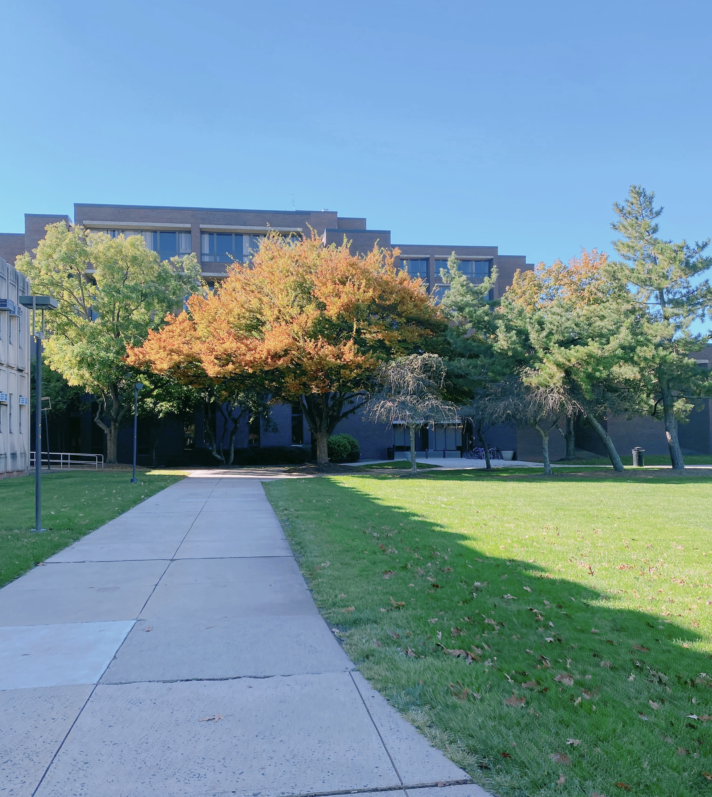

Crystal "Danikka" Jelski
Undergraduate student @ Rutgers- New Brunswick. Upcoming Aresty Research Assistant.

About Me
- Rising junior majoring in Computer Science at Rutgers-New Brunswick. Aspiring software engineer with an interest in embedded systems and cloud computing. Currently interested in the optimization of data processing and network performance.
Technology Stacks
Recent Work History
1/24 - 5/24
[Technical] Graded assignments (p-sets and quizzes) and exams including and not limited to: foundations of mathematical logic and proofs, sets, functions, logic gates, modeling computation, and number theory.
- Critically analyzed 300+ students' work and accordingly assigned grades via "Gradescope."
- Honed understanding of concepts in discrete structures.
- Created rubric weights.
- Proofread and came up with quiz questions.
[Soft Skills] Provided feedback to students directly on assignment and exam questions.
- Communicated with students through regrade requests for clarification and/or addressing concerns regarding grading.
- Worked closely with course instructor, fellow graders, and teaching assistants to coordinate efforts on grading policies and rubrics, feedback, etc.
- Addressed student inquiries on "Piazza."
5/23 - 3/24
[Technical] Utilized "ReClique Core", a management cloud application.
- Managed membership registration, unit changes, and renewals efficiently, ensuring accurate data entry and transactions.
- Fulfilled member tasks such as program sign-ups, transactions, check-ins, etc.
[Soft Skills] Communicated effectively with staff and the YMCA members and visitors.
- Conducted facility tours to visitors.
- Answered inquiries on the phone, emails, and in-person.
2/22 - 8/22
5/22 - 6/22
[Technical] Designed a plausible data structure for Bandila's "brand audit quiz."
- Utilized Python for creating the "quiz" and HTML/CSS for front-end styling.
- The "brand audit quiz" is a point system which depends on factors of whether a client would match the scope of Bandila's web services (e.g. website & logo designs, social media posts).
- For example, a client that is an individual or a micro enterprise would be "rewarded" a higher point in comparison to a large corporation.
- Attended technical meetings for critics on work.
[Soft Skills] Communicated and learned effectively from and with mentors.
- Attended meetings for technical reviews.
- Attended workshop meetings to learn about how Bandila operated as an LLC and as a start-up company.
11/21 - 1/22
Relevant Projects
Source code for site is adapted from YT's Traversy Media's "Build a Digit Resume" to host on github pages. Pictures are taken by me.